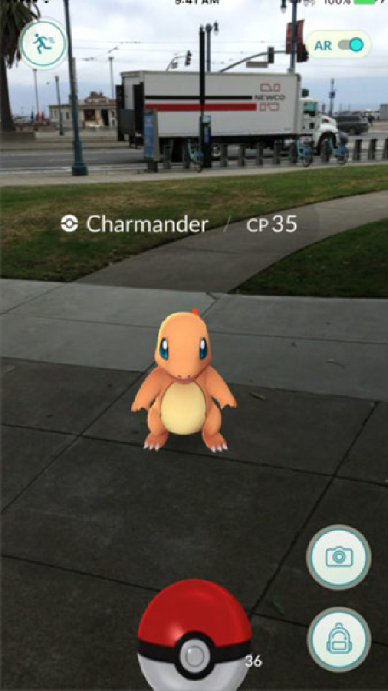

Що таке Pokémon GO?
 Pokemon Go - це проект в стилі Ingress в так званій « доповненій реальності » для смартфонів і планшетів на базі операційних систем Android і iOS . Гравцям належить шукати покемонів в містах , де вони живуть , викликати їх на поєдинки і ловити в разі перемоги . Крім того , покемонів можна отримувати з яєць , для чого доведеться не ловити їх , а пішки переміщатися по місту на певну відстань ( від двох до десяти кілометрів ) .Ловлячи або вирощуючи нових покемонів , гравці збільшують свій рівень , що дозволяє ловити сильніших монстрів і отримувати великі нагороди за це . Після досягнення п'ятого рівня гравці можуть приєднуватися до однієї з трьох команд , що дасть можливість битися за " гіми " . " Гіми " розташовані в людних місцях , і в них гравці можуть битися один з одним за контроль над територією і престиж . Тренувати покемонів можна тільки в " гімах " своєї команди , тому бої за володіння ними є важливим елементом геймплея.
Покемонам вдалося те, що не вдавалося тисячам медиків і фітнес - тренерам ,відірвати сучасних людей від комп'ютерів і вигнати їх на піші прогулянки . Заради Pokemon Go ! гравці закинули Твіттер , Фейсбук і Інстаграм . Відстань, яку проходить середньостатистичний геймер протягом дня , перевищує 10 км . Що дивно , цю відстань геймери проходять непомітно для себе : рух від покемона до покемону затягує , як гриби збирати .